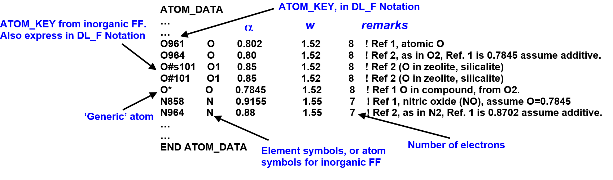
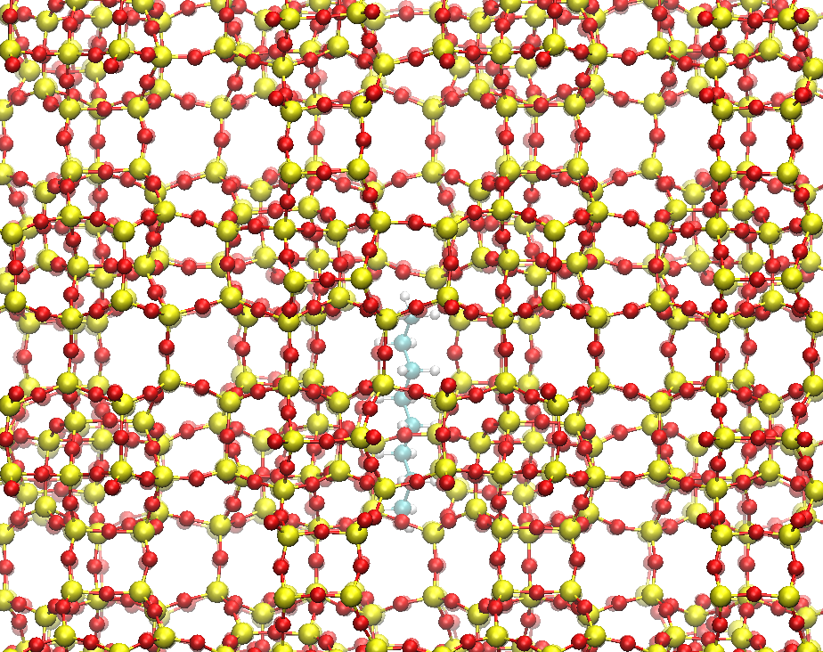

Auto VDW determination¶
This pages explains how DL_FIELD can use Slater-Kirkwood (SK) approximation to automatically determine the vdw parameters for any pair of atoms, in situations where there is no defined vdw mixing rules, nor standard parameters available in the literatures.
For this reason, this method only applies to systems that contain more than one FF scheme (multiple potential) such as the bio-inorganic models, where one atom is from one FF scheme and the other atom is from the other FF scheme.

SK approximation
Van der Waals (vdw) forces are combination of several non-covalent intermolecular forces that arise due to change in electron clouds, resulting in dipole moments. The strongest component being those of permanent dipoles, while the London dispersion force is the weakest component. The latter is predominantly present in nonpolar atoms such as noble gases. It arises due to instantaneous electron cloud fluctuations that form temporary dipoles. Therefore, London force is also called the induced dipole-induced dipole attraction.
For this reason, vdw forces are closely related to atomic polarisability (\(\alpha\)), or the ability to deform the electron clouds, especially those of electron valence.
Recall that a typical vdw LJ12-6 function consists of a repulsive parameter, A, and a dispersive parameter, B.
Consider two atoms, of type i and j, DL_FIELD can determine the dispersive parameter by using the Slater-Kirkwood approximation.
where N is the number of electron in an atom. In the case of the repulsive parameter, this can be obtained from the sum of atomic radii, w.
The dl_field.atom_data file
The equations show that \(\alpha\) and w are the only adjustable parameters and they are listed in the file called dl_field.atom_data in the /lib folder. A portion of this data, with illustrations, is shown below:
{kind=link}
To determine the vdw parameters, DL_FIELD will look for exact match of ATOM_KEYs expressed in DL_F Notation between the input system and the data list, to obtain the corresponding \(\alpha\) and w. If there is no match, DL_FIELD will obtain values from generic entries, with a symbol ‘*’. For example, the generic entry for fluorine is F*.
For more details about data sources, please look into the content of the file.
Note
The information listed in dl_field.atom_data cannot be overriden by the udff file. You would need to change values or add new entries directly in the file.
Using SK approximation
Consider a model consistis of an octane molecule trapped within silicalite (SiO2) framework, which is a zeolite.
{kind=link}
Below shows a portion of the configuration input file (in xyz format), showing the relevant directives.
2330
CRYST1 40.180 39.476 26.284 90.00 90.00 90.00 None 1
# POTENTIAL opls2005 MOLECULAR_GROUP A1
C 20.211000 16.483000 6.365000
C 19.789000 15.207000 5.635000
H 19.897000 17.379000 5.822000
H 19.770000 16.534000 7.366000
H 21.298000 16.534000 6.483000
C 20.209000 13.924000 6.361000
H 18.700000 15.207000 5.500000
H 20.216000 15.207000 4.624000
...
...
# POTENTIAL inorganic_zeolite MOLECULE_KEY Z4s MOLECULAR_GROUP A2
Si 28.853000 21.319000 23.108000
Si 26.862000 20.447000 25.183000
Si 25.482000 20.758000 14.855000
Si 22.341000 20.661000 14.791000
Si 21.865000 20.552000 24.931000
Si 24.413000 21.421000 23.522000
Si 28.824000 36.228000 22.852000
...
...
It shows OPLS2005 FF is applied to the octane molecule, while an inorganic_zeolite FF is applied to silicalite. Potential parameters are available for both the octane molecule and the silicalite structure. However, there is no vdw parameter available between atoms of both components. We will use the SK approximation to determine these missing parameters.
Below show a portion of DL_FIELD control, showing the relevant input options, as highlighted.
Control file title - octane in silicalite
1 * Construct DL_POLY output files
none * Secodary output files (Gromacs, Chemshell or none).
multiple * Type of force field require (see list below for choices).
kj/mol * Energy unit: kcal/mol, kJ/mol, eV, or K.
normal * Conversion criteria (strict, normal, loose)
1 * Bond type (0=default, 1=harmonic , 2=Morse)
1 * Angle type (0=default, 1=harmonic, 2=harmonic cos)
none * Include user-defined information. Put 'none' or a .udff filename
1 * Verbosity mode: 1 = on, 0 = off
octane_zeolite.xyz * Configuration file.
none * Output file in PDB. Put 'none' if not needed.
0 5 molecules 10.0 * Solution Maker: on/off, density, unit, cutoff)
1 * Optimise FIELD output size, if possible? 1=yes 0=no
1 * Atom display: 1 = DL_FIELD format. 2 = Standard format
1 * Vdw display format: 1 = 12-6 format 2 = LJ format
default * Epsilon mixing rule (organic FF only) : default, or 1 = geometric, 2 = arithmatic
default * Sigma mixing rule (organic FF only) : default, or 1 = geometric, 2 = arithmatic
1 * Epsilon mixing rule (inorganic FF only) : 1 = geometric 2 = arithmatic
1 * Sigma mixing rule (inorganic FF only) : 1 = geometric 2 = arithmatic
6 * Epsilon mixing rule (BETWEEN different FF) : 1 = geometric 2 = arithmatic
6 * Sigma mixing rule (BETWEEN different FF): 1 = geometric 2 = arithmatic
0 * Display additional info. for protein 1=Yes 0=No
0 * Freeze atoms? 1 = Yes (see below) 0 = No
0 * Tether atoms? 1 = Yes (see below) 0 = No
...
...
The control file shows this is a multiple potential model and DL_FIELD will extract the require FF schemes from the input file, octane_zeolite.xyz. The options (6) are selected for the LJ12-6 mixing rules to obtain the LJ \(\epsilon\) and \(\sigma\) parameters by meanis of SK approximation. Note that atom display mode must be that of DL_FIELD format (or DL_F Notation), to carry out correct matching against the data in the dl_field.atom_data.
When DL_FIELD is run, the following information will be reported in the dl_field.output file:
...
...
Use SK combination rule to determine vdw parameters between pairs
of atoms from different FF schemes. Reading data from dl_field.atom_data.
Selected atomic polarisabilities and vdw radii are shown in brackets).
C1p_A(pol=0.960 rvdw=1.800) - Si#101_B(pol=0.000 rvdw=2.100)
A = 0.0000e+00 B = 0.0000e+00
Eps = 0.000 Sigma = 0.000
================
C1p_A(pol=0.960 rvdw=1.800) - O#c101_B(pol=0.000 rvdw=0.000)
A = 0.0000e+00 B = 0.0000e+00
Eps = 0.000 Sigma = 0.000
================
C1p_A(pol=0.960 rvdw=1.800) - O#s101_B(pol=0.850 rvdw=1.520)
A = 1.1410e+06 B = 1.7041e+03
Eps = 0.636 Sigma = 2.958
================
...
...
Note
For more information about SK approximation, please consult DL_FIELD manual, Section 3.10.2